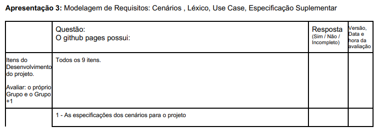

Lista de Verificação - Entrega 4
Introdução
Este documento apresenta uma lista de verificação criada para o Grupo 4 e o Grupo+1 (Grupo 5) referente a Etapa 4 do projeto, com o objetivo de garantir que os artefatos iniciais estejam de acordo com os requisitos e especificações estabelecidas. O checklist foi sugerido pelo professor como uma ferramenta prática para confirmar que todas as etapas estão cumpridas corretamente antes de avançar para as fases seguintes.
Funções dos autores
Tabela 1: Funções dos autores no artefato
| Nome | Função |
|---|---|
| Amanda Cruz | Adição de itens do checklist de NFR Framework e revisão do artefato |
| Julia Gabriela | Adição de itens do checklist de NFR Framework e revisão do artefato |
| João Pedro Costa | Criação da página; Desenvolvimento dos itens 1 a 15 na lista de verificação de historia de usuário; Desenvolvimento dos itens na lista de verificação da lista do professor de desenvolvimento do projeto e Conteudo da disciplina; |
| Gabriel Flores | Criação e adição de itens na lista de verificação de Backlog 1 a 12 |
| João Igor | Desenvolvimento dos itens 16 a 26 na lista de verificação de historia de usuário |
| Ryan Salles | Desenvolvimento dos itens 13 a 15 na lista de verificação de Backlog |
Checklist como Método de Verificação
O checklist, que significa Lista de Verificação, uma técnica importante durante a revisão das etapas do projeto, ajudando a garantir que cada parte esteja em conformidade com os requisitos estabelecidos. Para validar a eficácia e a completude do checklist, utilizaremos a técnica de inspeção, que consiste em uma revisão sistemática para verificar a clareza, relevância e aplicabilidade de cada item listado, tanto do nosso grupo quanto do grupo avaliado. Seu principal objetivo é:
- Identificar possíveis erros em qualquer parte do projeto.
- Verificar se o projeto atende aos requisitos especificados.
- Assegurar que o trabalho foi feito conforme os padrões e diretrizes definidas pelo professor.
- Garantir consistência e uniformidade.
- Facilitar o gerenciamento do projeto tornando-o mais organizado e controlado.
Checklists - Entrega 4
As Tabelas 2 e 3 apresentam checklists para os elementos de desenvolvimento do projeto e conteúdo da disciplina, respectivamente, presentes no GitPages, garantindo que as etapas e os requisitos técnicos sejam atendidos de acordo com o Plano de Ensino do professor.
Desenvolvimento do Projeto
Tabela 2: Checklist de Desenvolvimento do Projeto
| ID | Item | Referência |
|---|---|---|
| DS01 | Padronização do Histórico de Versão | BARROS, Andre. Plano de Ensino, RE-012025, Turma 3, p. 2. Aprender3. Acesso em: 01 de junho 2025. |
| DS02 | Autor e revisor para cada artefato | BARROS, Andre. Plano de Ensino, RE-012025, Turma 3, p. 2. Aprender3. Acesso em: 01 de junho 2025. |
| DS03 | Referências e/ou bibliografia em todos os artefatos | BARROS, Andre. Plano de Ensino, RE-012025, Turma 3, p. 2. Aprender3. Acesso em: 01 de junho 2025. |
| DS04 | Legenda e fonte em todas as imagens e tabelas | BARROS, Andre. Plano de Ensino, RE-012025, Turma 3, p. 2. Aprender3. Acesso em: 01 de junho 2025. |
| DS05 | Introdução do texto dos artefatos | BARROS, Andre. Plano de Ensino, RE-012025, Turma 3, p. 2. Aprender3. Acesso em: 01 de junho 2025. |
| DS06 | Cronograma executado além do inicialmente planejado | BARROS, Andre. Plano de Ensino, RE-012025, Turma 3, p. 1. Aprender3. Acesso em: 01 de junho 2025. |
| DS07 | Atas das reuniões | BARROS, Andre. Plano de Ensino, RE-012025, Turma 3, p. 2. Aprender3. Acesso em: 01 de junho 2025. |
| DS08 | Gravação das reuniões | BARROS, Andre. Plano de Ensino, RE-012025, Turma 3, p. 2. Aprender3. Acesso em: 01 de junho 2025. |
| DS09 | Upload de apresentação no YouTube como não "listado" | BARROS, Andre. Plano de Ensino, RE-012025, Turma 3, p. 2. Aprender3. Acesso em: 01 de junho 2025. |
Conteúdo da Disciplina
Tabela 3: Checklist de Conteúdo da Disciplina - Modelagem de Requisitos - Ágil
| ID | Item | Referência |
|---|---|---|
| CD01 | Possui as Histórias de Usuário? | BARROS, Andre. Plano de Ensino, RE-012025, Turma 3, p. 4. Aprender3. Acesso em: 01 de junho 2025. |
| CD02 | Os títulos das histórias de usuário são auto-explicativo? | BARROS, Andre. Plano de Ensino, RE-012025, Turma 3, p. 5. Aprender3. Acesso em: 01 de junho 2025. |
| CD03 | O “quem”, “o que” e o “por que” estão definidos na história de usuário? | BARROS, Andre. Plano de Ensino, RE-012025, Turma 3, p. 6. Aprender3. Acesso em: 01 de junho 2025. |
| CD04 | A participação do cliente e/ou persona na validação das histórias de usuário? | BARROS, Andre. Plano de Ensino, RE-012025, Turma 3, p. 6. Aprender3. Acesso em: 01 de junho 2025. |
| CD05 | A história possui critérios de aceitação? | BARROS, Andre. Plano de Ensino, RE-012025, Turma 3, p. 6. Aprender3. Acesso em: 01 de junho 2025. |
| CD06 | A participação do cliente e/ou persona na elicitação de requisitos? | BARROS, Andre. Plano de Ensino, RE-012025, Turma 3, p. 6. Aprender3. Acesso em: 01 de junho 2025. |
| CD07 | Todas as histórias de usuários podem ser testadas? | BARROS, Andre. Plano de Ensino, RE-012025, Turma 3, p. 6. Aprender3. Acesso em: 01 de junho 2025. |
| CD08 | Existe o backlog? | BARROS, Andre. Plano de Ensino, RE-012025, Turma 3, p. 6. Aprender3. Acesso em: 01 de junho 2025. |
| CD09 | O backlog possui épicos e temas bem definidos e descritos? | BARROS, Andre. Plano de Ensino, RE-012025, Turma 3, p. 6. Aprender3. Acesso em: 01 de junho 2025. |
| CD10 | As Histórias de Usuário seguem algum modelo ou padrão? | BARROS, Andre. Plano de Ensino, RE-012025, Turma 3, p. 6. Aprender3. Acesso em: 01 de junho 2025. |
| CD11 | Existe NFR Framework? | BARROS, Andre. Plano de Ensino, RE-012025, Turma 3, p. 6. Aprender3. Acesso em: 01 de junho 2025. |
| CD12 | Existe uma definição do RNF e as fontes de evidência na literatura? | BARROS, Andre. Plano de Ensino, RE-012025, Turma 3, p. 6. Aprender3. Acesso em: 01 de junho 2025. |
| CD13 | Existe um cartão de especificação do RNF? | BARROS, Andre. Plano de Ensino, RE-012025, Turma 3, p. 6. Aprender3. Acesso em: 01 de junho 2025. |
| CD14 | Os softgoals condizem com o contexto? | BARROS, Andre. Plano de Ensino, RE-012025, Turma 3, p. 6. Aprender3. Acesso em: 01 de junho 2025. |
| CD15 | Os softgoals representam metas bem definidas? | BARROS, Andre. Plano de Ensino, RE-012025, Turma 3, p. 6. Aprender3. Acesso em: 01 de junho 2025. |
| CD16 | Os impactos foram corretamente propagados? | BARROS, Andre. Plano de Ensino, RE-012025, Turma 3, p. 6. Aprender3. Acesso em: 01 de junho 2025. |
Historia de Usuário
A Tabela 4 abaixo apresenta uma lista de verificação para as historias de usuário. O objetivo é garantir que todas as histórias estejam completas, claras e atendam aos critérios estabelecidos.
Tabela 4: Checklist - Historia de Usuário
| ID | Tópico | Descrição | Resposta (Sim/Não) | Referência | Autor |
|---|---|---|---|---|---|
| 01 | Formato da História | A história de usuário segue o formato “Como persona, quero ação”? | ATLASSIAN. How to write user stories. Disponível em: https://www.atlassian.com/agile/project-management/user-stories. Acesso em: 01 jun. 2025. | João Pedro Costa | |
| 02 | Valor ao Usuário | Está claro o valor para o usuário? | ATLASSIAN. How to write user stories. Disponível em: https://www.atlassian.com/agile/project-management/user-stories. Acesso em: 01 jun. 2025. | João Pedro Costa | |
| 03 | Clareza e Concisão | A história é curta e concisa? | ATLASSIAN. How to write user stories. Disponível em: https://www.atlassian.com/agile/project-management/user-stories. Acesso em: 01 jun. 2025. | João Pedro Costa | |
| 04 | Critérios de Aceitação | Existem critérios de aceitação definidos? | ATLASSIAN. How to write user stories. Disponível em: https://www.atlassian.com/agile/project-management/user-stories. Acesso em: 01 jun. 2025. | João Pedro Costa | |
| 05 | Independência | A história é independente de outras? | SOMMERVILLE, Ian. Engenharia de Software. 10. ed. São Paulo: Pearson, 2019. | João Pedro Costa | |
| 06 | Negociabilidade | A história é negociável, pode ser modificada em conversa? | ATLASSIAN. How to write user stories. Disponível em: https://www.atlassian.com/agile/project-management/user-stories. Acesso em: 01 jun. 2025. | João Pedro Costa | |
| 07 | Testabilidade | A história é testável, pode-se verificar se foi completada? | ATLASSIAN. How to write user stories. Disponível em: https://www.atlassian.com/agile/project-management/user-stories. Acesso em: 01 jun. 2025. | João Pedro Costa | |
| 08 | Estimabilidade | Ela é estimável, é possível estimar tempo e esforço? | ATLASSIAN. How to write user stories. Disponível em: https://www.atlassian.com/agile/project-management/user-stories. Acesso em: 01 jun. 2025. | João Pedro Costa | |
| 09 | Nome Padrão | O nome do documento possui nomenclatura padrão? (EU_000_NomeDaEstoria) | BRASIL. Ministério da Agricultura. Lista de Verificação da Qualidade de Artefatos. Disponível em: https://www.gov.br/agricultura/pt-br/acesso-a-informacao/licitacoes-e-contratos/edital/2019/pregao-eletronico-no-05-2018/diretrizes/lista-de-verificacao-da-qualidade-de-artefatos-checklist-agil.xls/view. Acesso em: 01 jun. 2025. | João Pedro Costa | |
| 10 | Formatação do Documento | O documento possui formatação seguindo o template (título, estilo etc.)? | BRASIL. Ministério da Agricultura. Lista de Verificação da Qualidade de Artefatos. Disponível em: https://www.gov.br/agricultura/pt-br/acesso-a-informacao/licitacoes-e-contratos/edital/2019/pregao-eletronico-no-05-2018/diretrizes/lista-de-verificacao-da-qualidade-de-artefatos-checklist-agil.xls/view. Acesso em: 01 jun. 2025. | João Pedro Costa | |
| 11 | Contextualização da História | Existe relação entre as historias de usuário? | COORDENAÇÃO GERAL DE TECNOLOGIA DA INFORMAÇÃO - CGTI. EU_xxx_Titulo_da_Estoria_de_Usuario: template para especificação de histórias de usuário. [S.l.]: CGTI, 2018. 5 p. Disponível em: História de Usuário. Acesso em: 22 de maio 2025. | João Pedro Costa | |
| 12 | Criterio de aceite | Os criterios de aceite visão cenários? | COORDENAÇÃO GERAL DE TECNOLOGIA DA INFORMAÇÃO - CGTI. EU_xxx_Titulo_da_Estoria_de_Usuario: template para especificação de histórias de usuário. [S.l.]: CGTI, 2018. 5 p. Disponível em: História de Usuário. Acesso em: 01 jun. 2025. | João Pedro Costa | |
| 13 | Linguagem do Usuário | A linguagem utilizada na User Story é alinhada ao vocabulário do usuário, evitando termos técnicos desnecessários? | CWI SOFTWARE. User stories: boas práticas, estruturação e dicas extras. CWI, 2023. Disponível em: https://cwi.com.br/blog/user-stories-estruturacao-e-dicas-extras/. Acesso em: 01 jun. 2025. | João Pedro Costa | |
| 14 | Riscos | Os riscos podem ser identificados na descrição? | LinkedIn, 2023. Disponível em: https://www.linkedin.com/advice/0/how-do-you-estimate-user-story-risk-skills-agile-methodologies. Acesso em: 01 jun. 2025. | João Pedro Costa | |
| 15 | Refinamento | As historias muito grandes foram refinadas e divididas? | LinkedIn, 2023. Disponível em: https://www.linkedin.com/advice/0/how-do-you-estimate-user-story-risk-skills-agile-methodologies. Acesso em: 01 jun. 2025. | João Pedro Costa | |
| 16 | Aceitação | Foi lida e aprovada por alguém fora da equipe? | COHN, Mike. What Level of Detail Should Be Captured in a User Story?. Mountain Goat Software, 2016. Disponível em: https://www.mountaingoatsoftware.com/blog/what-level-of-detail-should-be-captured-in-a-user-story. Acesso em: 01 jun 2025. | João Igor | |
| 17 | Linguagem vaga | Evita detalhamento em linguagem de usuário final? Ex: “fácil de usar” ou "bem rápido" | COHN, Mike. What Level of Detail Should Be Captured in a User Story?. Mountain Goat Software, 2016. Disponível em: https://www.mountaingoatsoftware.com/blog/what-level-of-detail-should-be-captured-in-a-user-story. Acesso em: 01 jun 2025. | João Igor | |
| 18 | Objetivo | Tem ligação com objetivo de negócio? | COHN, Mike. What Level of Detail Should Be Captured in a User Story?. Mountain Goat Software, 2016. Disponível em: https://www.mountaingoatsoftware.com/blog/what-level-of-detail-should-be-captured-in-a-user-story. Acesso em: 01 jun 2025. | João Igor | |
| 19 | Complexidade | Nível de detalhe é proporcional à prioridade? | COHN, Mike. What Level of Detail Should Be Captured in a User Story?. Mountain Goat Software, 2016. Disponível em: https://www.mountaingoatsoftware.com/blog/what-level-of-detail-should-be-captured-in-a-user-story. Acesso em: 01 jun 2025. | João Igor | |
| 20 | Detalhamento | Omite detalhes irrelevantes para a entrega? Ex: campos ou regras de negócio que não afetam a funcionalidade diretamente | COHN, Mike. What Level of Detail Should Be Captured in a User Story?. Mountain Goat Software, 2016. Disponível em: https://www.mountaingoatsoftware.com/blog/what-level-of-detail-should-be-captured-in-a-user-story. Acesso em: 01 jun 2025. | João Igor | |
| 21 | Objetivo | Foca na necessidade do usuário e não na solução técnica? | COHN, Mike. What Level of Detail Should Be Captured in a User Story?. Mountain Goat Software, 2016. Disponível em: https://www.mountaingoatsoftware.com/blog/what-level-of-detail-should-be-captured-in-a-user-story. Acesso em: 01 jun 2025. | João Igor | |
| 22 | Objetivo | Pode ser relacionada a uma métrica de sucesso? | COHN, Mike. What Level of Detail Should Be Captured in a User Story?. Mountain Goat Software, 2016. Disponível em: https://www.mountaingoatsoftware.com/blog/what-level-of-detail-should-be-captured-in-a-user-story. Acesso em: 01 jun 2025. | João Igor | |
| 23 | Aceitação | Os elementos internos da história são consistentes entre si? | COHN, Mike. What Level of Detail Should Be Captured in a User Story?. Mountain Goat Software, 2016. Disponível em: https://www.mountaingoatsoftware.com/blog/what-level-of-detail-should-be-captured-in-a-user-story. Acesso em: 01 jun 2025. | João Igor | |
| 24 | Objetivo | A história não mistura diferentes objetivos ou ações? | EASY AGILE. How to write good user stories in agile software development. Easy Agile Blog, 2022. Disponível em: https://www.easyagile.com/blog/how-to-write-good-user-stories-in-agile-software-development. Acesso em: 01 jun 2025. | João Igor | |
| 25 | Objetivo | A funcionalidade proposta contribui para o objetivo geral do produto? | EASY AGILE. How to write good user stories in agile software development. Easy Agile Blog, 2022. Disponível em: https://www.easyagile.com/blog/how-to-write-good-user-stories-in-agile-software-development. Acesso em: 01 jun 2025. | João Igor | |
| 26 | Objetivo | Foca no que o sistema deve fazer, e não em como a tela será desenhada? | EASY AGILE. How to write good user stories in agile software development. Easy Agile Blog, 2022. Disponível em: https://www.easyagile.com/blog/how-to-write-good-user-stories-in-agile-software-development. Acesso em: 01 jun 2025. | João Igor |
Backlog
A Tabela 5 abaixo apresenta uma lista de verificação para o Backlog. O objetivo é garantir que o Backlog esteja completo, claro e atenda aos critérios estabelecidos.
Tabela 5: Checklist - Backlog
| Item | Item de Verificação | Verificação | Referência | Autores |
|---|---|---|---|---|
| 1 | O Product Backlog está definido como uma lista de todas as funcionalidades desejadas para o produto? | SERRANO, Milene; SERRANO, Maurício. Requisitos – Aula 15. Gama: Universidade de Brasília (UnB). Slide de apresentação. | Gabriel Flores | |
| 2 | Foi indicado que o Product Owner é o responsável por definir e priorizar o conteúdo do backlog? | SERRANO, Milene; SERRANO, Maurício. Requisitos – Aula 15. Gama: Universidade de Brasília (UnB). Slide de apresentação. | Gabriel Flores | |
| 3 | Está claro que o Product Backlog não precisa estar completo no início do projeto? | SERRANO, Milene; SERRANO, Maurício. Requisitos – Aula 15. Gama: Universidade de Brasília (UnB). Slide de apresentação. | Gabriel Flores | |
| 4 | O documento indica que o backlog cresce e muda com o tempo, conforme o conhecimento do produto evolui? | SERRANO, Milene; SERRANO, Maurício. Requisitos – Aula 15. Gama: Universidade de Brasília (UnB). Slide de apresentação. | Gabriel Flores | |
| 5 | Os itens do Product Backlog são especificados utilizando as histórias de usuário? | SERRANO, Milene; SERRANO, Maurício. Requisitos – Aula 15. Gama: Universidade de Brasília (UnB). Slide de apresentação. | Gabriel Flores | |
| 6 | Os itens focam no "o que" deve ser feito, e não no "como"? | SERRANO, Milene; SERRANO, Maurício. Requisitos – Aula 15. Gama: Universidade de Brasília (UnB). Slide de apresentação. | Gabriel Flores | |
| 7 | Está indicado que os itens podem ter critérios de aceitação? | SERRANO, Milene; SERRANO, Maurício. Requisitos – Aula 15. Gama: Universidade de Brasília (UnB). Slide de apresentação. | Gabriel Flores | |
| 8 | A prioridade de execução está bem definida? | SERRANO, Milene; SERRANO, Maurício. Requisitos – Aula 15. Gama: Universidade de Brasília (UnB). Slide de apresentação. | Gabriel Flores | |
| 9 | O backlog utiliza Épicos? | SERRANO, Milene; SERRANO, Maurício. Requisitos – Aula 15. Gama: Universidade de Brasília (UnB). Slide de apresentação. | Gabriel Flores | |
| 10 | Os épicos são divididos em histórias de usuários mais detalhadas? | SERRANO, Milene; SERRANO, Maurício. Requisitos – Aula 15. Gama: Universidade de Brasília (UnB). Slide de apresentação. | Gabriel Flores | |
| 11 | Há exemplos ou explicações de como Epics e User Stories são utilizados? | SERRANO, Milene; SERRANO, Maurício. Requisitos – Aula 15. Gama: Universidade de Brasília (UnB). Slide de apresentação. | Gabriel Flores | |
| 12 | O Product Backlog está conectado à modelagem de requisitos de maneira iterativa e incremental? | SERRANO, Milene; SERRANO, Maurício. Requisitos – Aula 15. Gama: Universidade de Brasília (UnB). Slide de apresentação. | Gabriel Flores | |
| 13 | Os épicos possuem features relacionadas? | JAMES, Michael; WALTER, Luke. SCRUM REFERENCE CARD. | Ryan Salles | |
| 14 | Os épicos são rastreáveis para com as estórias de usuário? | JAMES, Michael; WALTER, Luke. SCRUM REFERENCE CARD. | Ryan Salles | |
| 15 | Os itens mais próximos do topo do backlog estão suficientemente granulares para serem passíveis de implementação em apenas uma sprint | JAMES, Michael; WALTER, Luke. SCRUM REFERENCE CARD. | Ryan Salles |
NFR Framework
A Tabela 6 abaixo apresenta uma lista de verificação para o artefato NFR Framework. O objetivo é garantir que o NFR esteja completo, claro e atenda aos critérios estabelecidos.
Tabela 6: Checklist - NFR Framework
| ID | Item | Referência | Autor |
|---|---|---|---|
| 1 | Os três tipos de softgoals (NFR, Operacionalização, Afirmação) foram devidamente identificados e representados no SIG com suas notações gráficas específicas (ex: nuvens claras, grossas, tracejadas)? | SILVA, Reinaldo Antônio da. NFR4ES: Um Catálogo de Requisitos Não-Funcionais para Sistemas Embarcados, P. 31, Seção 2.4.3. UFPE, 2019. | Amanda Cruz |
| 2 | Os softgoals foram detalhados através dos tipos de refinamentos apropriados (ex: decomposição, priorização) para derivar sub-softgoals mais específicos? | SILVA, Reinaldo Antônio da. NFR4ES: Um Catálogo de Requisitos Não-Funcionais para Sistemas Embarcados, P. 32 e 33, Seção 2.4.4.1. UFPE, 2019. | Amanda Cruz |
| 3 | As relações de impacto entre softgoals (pai-filho) foram modeladas usando os diversos tipos de contribuições (AND, OR, MAKE, etc.)? | SILVA, Reinaldo Antônio da. NFR4ES: Um Catálogo de Requisitos Não-Funcionais para Sistemas Embarcados, P. 34-37, Seção 2.4.4.2. UFPE, 2019. | Amanda Cruz |
| 4 | Foram atribuídos rótulos de avaliação (propagação de impactos) aos softgoals para indicar seu status após a análise do SIG? | SILVA, Reinaldo Antônio da. NFR4ES: Um Catálogo de Requisitos Não-Funcionais para Sistemas Embarcados, P. 38, Seção 2.4.5. UFPE, 2019. | Amanda Cruz |
| 5 | Os Requisitos Não-Funcionais (RNFs) centrais do projeto foram capturados e representados como softgoals desde o início? | SILVA, Reinaldo Antônio da. NFR4ES: Um Catálogo de Requisitos Não-Funcionais para Sistemas Embarcados, P. 30, Seção 2.4.1. UFPE, 2019. | Amanda Cruz |
| 6 | Foi construído o SIG para visualizar os softgoals, suas inter-relações e o racional de design do sistema? | SILVA, Reinaldo Antônio da. NFR4ES: Um Catálogo de Requisitos Não-Funcionais para Sistemas Embarcados, P. 30 e 31, Seção 2.4.1 e 2.4.2. UFPE, 2019. | Amanda Cruz |
| 7 | Cada softgoal NFR possui seu "tipo" (a qualidade NFR, ex: Confiabilidade) e "tópico" (o objeto da qualidade) claramente definidos para especificar seu escopo? | SILVA, Reinaldo Antônio da. NFR4ES: Um Catálogo de Requisitos Não-Funcionais para Sistemas Embarcados, P. 32, Seção 2.4.3. UFPE, 2019. | Amanda Cruz |
| 8 | O SIG registra explicitamente as decisões de desenvolvimento tomadas, as alternativas consideradas e as justificativas para as escolhas feitas? | SILVA, Reinaldo Antônio da. NFR4ES: Um Catálogo de Requisitos Não-Funcionais para Sistemas Embarcados, P. 30 e 31, Seção 2.4.2. UFPE, 2019. | Amanda Cruz |
| 9 | Os softgoals NFR estão organizados de forma hierárquica dentro do SIG? | SILVA, Reinaldo Antônio da. NFR4ES: Um Catálogo de Requisitos Não-Funcionais para Sistemas Embarcados, P. 31, Seção 2.4.3. UFPE, 2019. | Amanda Cruz |
| 10 | Para cada softgoal NFR importante, foram identificadas e representadas no SIG uma ou mais soluções de implementação (softgoals de operacionalização) que buscam atendê-lo? | SILVA, Reinaldo Antônio da. NFR4ES: Um Catálogo de Requisitos Não-Funcionais para Sistemas Embarcados, P. 31, Seção 2.4.3. UFPE, 2019. | Amanda Cruz |
| 11 | Foram colocadas legendas e rótulos para as contribuições e contribuição dos NFRs? | SILVA, Reinaldo Antônio da. NFR4ES: Um Catálogo de Requisitos Não-Funcionais para Sistemas Embarcados. UFPE, 2019. | JuliaGabP |
| 12 | Os requisitos utilizados para a criação dos NFRs foram apenas os não funcionais? | SILVA, Reinaldo Antônio da. NFR4ES: Um Catálogo de Requisitos Não-Funcionais para Sistemas Embarcados. UFPE, 2019 | JuliaGabP |
| 13 | Foram feitas explicações e criação de legendas para os rótulos do NFR? | SILVA, Reinaldo Antônio da. NFR4ES: Um Catálogo de Requisitos Não-Funcionais para Sistemas Embarcados. UFPE, 2019 | JuliaGabP |
| 14 | Cada NFR está claramente associado a pelo menos uma necessidade do sistema ou do usuário? | SILVA, Reinaldo Antônio da. NFR4ES: Um Catálogo de Requisitos Não-Funcionais para Sistemas Embarcados. UFPE, 2019 | JuliaGabP |
| 15 | Foi utilizada uma taxonomia (ex: desempenho) para classificar os NFRs? | SILVA, Reinaldo Antônio da. NFR4ES: Um Catálogo de Requisitos Não-Funcionais para Sistemas Embarcados. UFPE, 2019 | JuliaGabP |
| 16 | Os NFRs estão descritos de forma mensurável, evitando termos vagos como "rápido" ou "seguro"? | SILVA, Reinaldo Antônio da. NFR4ES: Um Catálogo de Requisitos Não-Funcionais para Sistemas Embarcados. UFPE, 2019 | JuliaGabP |
| 17 | Os NFRs foram validados com as partes interessadas? | SILVA, Reinaldo Antônio da. NFR4ES: Um Catálogo de Requisitos Não-Funcionais para Sistemas Embarcados. UFPE, 2019 | JuliaGabP |
| 18 | Os NFRs estão documentados separadamente dos requisitos funcionais, mas com rastreabilidade entre eles? | SILVA, Reinaldo Antônio da. NFR4ES: Um Catálogo de Requisitos Não-Funcionais para Sistemas Embarcados. UFPE, 2019 | JuliaGabP |
| 19 | Há explicação ou justificativa clara para a priorização de cada NFR? | SILVA, Reinaldo Antônio da. NFR4ES: Um Catálogo de Requisitos Não-Funcionais para Sistemas Embarcados. UFPE, 2019 | JuliaGabP |
| 20 | Foram identificados e descritos possíveis conflitos entre NFRs e como eles foram resolvidos? | SILVA, Reinaldo Antônio da. NFR4ES: Um Catálogo de Requisitos Não-Funcionais para Sistemas Embarcados. UFPE, 2019 | JuliaGabP |
Referências
As referências das Tabelas 2 e 3 tiveram como referência as Figuras 1 a 4.
BARROS, André. Plano de Ensino, RE-012025, Turma 3. Disponível em: https://aprender3.unb.br/pluginfile.php/3106711/mod_resource/content/55/Lista%20de%20Verifificac%CC%A7a%CC%83o%20-%20Plano_de_Ensino%20RE%20012025%20Turma%2003%20v1.pdf. Acesso em: 01 junho 2025.
Figura 1: Lista de Verificação - Desenvolvimento (DS01 - DS09)

Fonte: André Barros, 2025
Figura 2: Lista de Verificação - Planejamento (CD01)

Fonte: André Barros, 2025
Figura 3: Lista de Verificação - Planejamento (CD01-CD02)
Fonte: André Barros, 2025
Figura 4: Lista de Verificação - Planejamento (CD03-CD16)
Fonte: André Barros, 2025
ATLASSIAN. How to write user stories. Disponível em: https://www.atlassian.com/agile/project-management/user-stories. Acesso em: 01 jun. 2025.
SOMMERVILLE, Ian. Engenharia de Software. 9. ed. São Paulo: Pearson, 2011.
BRASIL. Ministério da Agricultura. Lista de Verificação da Qualidade de Artefatos. Disponível em: https://www.gov.br/agricultura/pt-br/assuntos/tecnologia-da-informacao/arquivos/Lista_de_Verificacao_da_Qualidade_de_Artefatos.xls/view. Acesso em: 01 jun. 2025.
SERRANO, Milene; SERRANO, Maurício. Requisitos – Aula 15. Gama: Universidade de Brasília (UnB). Slide de apresentação. Acesso em 01 jun. 2025.
CWI SOFTWARE. User stories: boas práticas, estruturação e dicas extras. CWI, 2023. Disponível em: https://cwi.com.br/blog/user-stories-estruturacao-e-dicas-extras/. Acesso em: 01 jun. 2025.
COHN, Mike. What Level of Detail Should Be Captured in a User Story?. Mountain Goat Software, 2016. Disponível em: https://www.mountaingoatsoftware.com/blog/what-level-of-detail-should-be-captured-in-a-user-story. Acesso em: 01 jun 2025.
EASY AGILE. How to write good user stories in agile software development. Easy Agile Blog, 2022. Disponível em: https://www.easyagile.com/blog/how-to-write-good-user-stories-in-agile-software-development. Acesso em: 01 jun 2025.
LinkedIn. How do you estimate user story risk skills in agile methodologies?. Disponível em: https://www.linkedin.com/advice/0/how-do-you-estimate-user-story-risk-skills-agile-methodologies. Acesso em: 01 jun 2025.
SILVA, Reinaldo Antônio da. NFR4ES: Um Catálogo de Requisitos Não-Funcionais para Sistemas Embarcados, P. 31, Seção 2.4.3. UFPE, 2019. Disponível em: https://repositorio.ufpe.br/handle/123456789/34150. Acesso em: 01 jun.
COORDENAÇÃO GERAL DE TECNOLOGIA DA INFORMAÇÃO - CGTI. EU_xxx_Titulo_da_Estoria_de_Usuario: template para especificação de histórias de usuário. [S.l.]: CGTI, 2018. 5 p. Disponível em: História de Usuário. Acesso em: 22 de maio 2025.
JAMES, Michael; WALTER, Luke. SCRUM REFERENCE CARD. Disponível em: https://aprender3.unb.br/pluginfile.php/3096147/mod_resource/content/1/RE%20-%20Aula%2015%20-%20Materiais.zip?forcedownload=1. Acesso em: 01/06/2025
Histórico de Versão
| Versão | Data | Descrição | Autor | Revisor |
|---|---|---|---|---|
| 1.0 | 01/06/2025 | Criando a pagina | João Pedro Costa | Ryan Salles |
| 1.1 | 01/06/2025 | Adicionando lista de verificação de historia de usuário | João Pedro Costa | Amanda Cruz |
| 1.2 | 01/06/2025 | Adicionando lista de verificação do professor | João Pedro Costa | Amanda Cruz |
| 1.3 | 01/06/2025 | Adicionando itens de verificação de Backlog | Gabriel Flores | Ryan Salles |
| 1.4 | 01/06/2025 | Adicionando itens de verificação de NFR Framework | Amanda Cruz | João Pedro Costa |